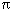
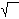

math.h - mathematical declarations
#include <math.h>
The <math.h> header provides for the following constants. The values are of type double and are accurate within the precision of the double type.
- M_E
- Value of e
- M_LOG2E
- Value of log2e
- M_LOG10E
- Value of log10e
- M_LN2
- Value of loge2
- M_LN10
- Value of loge10
- M_PI
- Value of 
- M_PI_2
- Value of /2
- M_PI_4
- Value of /4
- M_1_PI
- Value of 1/
- M_2_PI
- Value of 2/
- M_2_SQRTPI
- Value of 2/ 
- M_SQRT2
- Value of 2
- M_SQRT1_2
- Value of 1/2
The header defines the following symbolic constants:
- MAXFLOAT
- Value of maximum non-infinite single-precision floating point number.
- HUGE_VAL
- A positive double expression, not necessarily representable as a float. Used as an error value returned by the mathematics library. HUGE_VAL evaluates to positive infinity on systems supporting the ANSI/IEEE Std 754:1985 standard.
The following are declared as functions and may also be defined as macros. Function prototypes must be provided for use with an ISO C compiler.
double acos(double); double asin(double); double atan(double); double atan2(double, double); double ceil(double); double cos(double); double cosh(double); double exp(double); double fabs(double); double floor(double); double fmod(double, double); double frexp(double, int *); double ldexp(double, int); double log(double); double log10(double); double modf(double, double *); double pow(double, double); double sin(double); double sinh(double); double sqrt(double); double tan(double); double tanh(double); double erf(double); double erfc(double); double gamma(double); double hypot(double, double); double j0(double); double j1(double); double jn(int, double); double lgamma(double); double y0(double); double y1(double); double yn(int, double); int isnan(double); double acosh(double); double asinh(double); double atanh(double); double cbrt(double); double expm1(double); int ilogb(double); double log1p(double); double logb(double); double nextafter(double, double); double remainder(double, double); double rint(double); double scalb(double, double);The following external variable is defined:
extern int signgam;
None.
None.
acos(), acosh(), asin(), atan(), atan2(), cbrt(), ceil(), cos(), cosh(), erf(), exp(), expm1(), fabs(), floor(), fmod(), frexp(), hypot(), ilogb(), isnan(), j0(), ldexp(), lgamma(), log(), log10(), log1p(), logb(), modf(), nextafter(), pow(), remainder(), rint(), scalb(), sin(), sinh(), sqrt(), tan(), tanh(), y0().